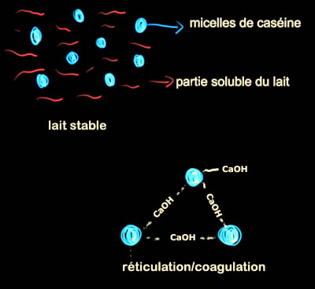
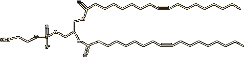
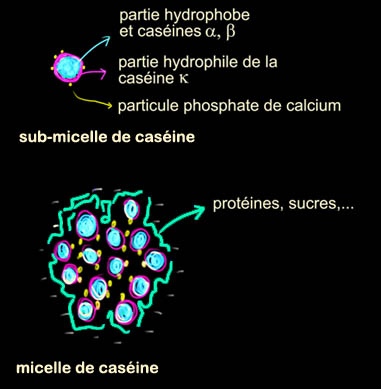

|
|
Navig.
page/section


_____
|
|
Pages soeurs
I, A propos des liants
II, Bulles, siccativ., struct. élec.
III, Caséine, phosphore, dissociation
IV, Les orbitales
V, L'aérogel
VI, Polarisation de la lumière
VII, Sfumato et diffusion Rayleigh
VIII, Les interférentielles
IX, Dextrine, farine et chiralité
X, L'ocre bleue
XI, Les métamatériaux
XII, Le jaunissement
XIII, Laser etc.
XIV, L'holographie
XV, L'holographie numérique
XVI, Extérieur, intérieur, chaux
XVII, L'électrolyse et les ions
XVIII, L'électricité, un peu plus loin
XIX, Oxydation, métaux
XX, Les échelles
XXI, Nature et évolution des résines
XXII, Le mouillage pigmentaire
XXIII, La molette
XXIV, Blanche neige
XXV, Lumière et matière
XXVI, Magnétisme
XXVII, Ambre et vieilles branches
XXVIII, L'origami miroir
XXIX, Le feu
XXX, Peau du métal
XXXI, La ville en un souffle
XXXII, Oxyder des matériaux
XXXIII, Ocre bleue, une solution
_____
|
Copyright © www.dotapea.com
Tous droits réservés.
Précisions cliquer ici
|
|
| |
|
|
Les
dialogues sur la physique-chimie
appliquée
aux arts
Chapitre III
Caséine,
phosphore et dissociation
|
 |
dial dial
dial
English
text

Ce chapitre III des
Dialogues de Dotapea
est une discussion entre Jean-Louis, physico-chimiste au CNRS, et un
candide, Emmanuel.
Les personnages sont réels, la
discussion aussi. Elle peut reprendre à tout moment et ce texte peut s'allonger.
|
Emmanuel :
On parle en cuisine de "cuisson chimique". Cela m'intrigue
et je pense que ça peut ouvrir sur des choses qui intéresseront des artistes
et des décorateurs. A quoi cette "cuisson" correspond-elle en physico-chimie des interfaces ?
Jean-Louis :
A une réticulation/polymérisation peut-être. Par exemple, si tu mets du
vinaigre dans de la crème fraîche, elle coagule sans que l'on chauffe parce que
le vinaigre polymérise les protéines du lait.
Emmanuel :
Comment fait-il cela ?
Jean-Louis : Dans le lait ou la crème, la caséine forme des
micelles qui
servent à stabiliser le calcium. Ces micelles sont chargées négativement et
donc se repoussent sous l'action des forces
électrostatiques. Sous l'action
d'acides (charges positives) (par exemple, l'acide lactique qui est produit
par les bactéries qui "mangent" le lactose) ces micelles perdent
progressivement leur charge. Quand elles
deviennent neutres elles s'agglutinent.
Il y a une autre façon de
coaguler les protéines du lait.
Sous l'action d'enzymes (dans notre estomac ou celui des veaux) les micelles
sont partiellement déstabilisées. Les molécules de caséine se déroulent en
partie (c'est une grosse molécule) et avec l'aide indispensable des ions
calcium il se forme des "ponts" de molécules d'eau et de calcium entre
micelles voisines et le lait ou la crème coagule.

Emmanuel :
En marge de ces questions, quel est le rôle du
phosphore (que l'on retrouve dans la caséine) dans les "phospholipides" lactiques ?
Jean-Louis : Le phosphore ne sert à rien !
C'est juste l'élément sur lequel toute la molécule s'articule. Le phosphore
porte la partie polaire chargée et les chaînes grasses hydrophobes.
Cf. molécule ci-dessous.

Note : dans cette représentation d'une molécule de
dioleoyl-phosphatidylethanolamine, on trouve la partie
polaire à gauche,
suivie du phosphore "central", puis de chaînes grasses à droite.
Emmanuel :
D'accord. Le phosphore peut être au centre de structures de ce genre.
Mais finalement, combien d'éléments peuvent-ils remplir ce genre de rôles ?
Jean-Louis : Une foultitude, mon bon
monsieur. Mais la vie a choisi le phosphore, sans doute parce qu'il est
disponible en abondance.
Emmanuel :
Certains évoquent un rôle finalement assez mineur des phospholipides
par rapport à celui des protéines dans les émulsions à l'oeuf. Qu'en
penses-tu ?
Jean-Louis : Pour être franc, je ne sais
pas. Si on cherche des tensioactifs, les
phospholipides sont les candidats idéaux puisqu'ils sont omniprésents dans
toute structure vivante. Mais les protéines peuvent aussi jouer un rôle de
tensioactif. Alors ensuite savoir qui fait quoi.... Dans le cas de l'oeuf,
les phospholipides sont certainement minoritaires, au moins en masse. Ceci
dit, le propre d'un tensioactif est de savoir se mettre au bon endroit (les interfaces), et
il en faut au finale très peu. Comme disait la pub, "quelques gouttes
suffisent" !
Lire passage in
Chapitre I
|
|
Caséine, micelles et enzymes |
|
Emmanuel : Un
lecteur de Dotapea avait soulevé un questionnement intéressant sur la caséine : « J'ai acheté un bouquin, "Couleurs
végétales : teintures, pigments et encres", chez Les Ateliers de Provence,
qui annonce dans son tableau des ingrédients, à l'article Borax : "C'est le
borate de soude, un alcali transformant la caséine en une colle très
adhérente" (sic). Et dans la même collection, le bouquin "Ocres et peintures
décoratives de Provence", donne plein de recettes de peintures à la caséine,
avec soit du bore, soit de la chaux, soit de l'ammoniaque.
Bref, rien de très scientifique là-dedans, mais décidément, cette
association caséine/bore revient souvent. »
Il n'a pas tort : rien de très scientifique là-dedans, et
pourtant, ce thème revient effectivement souvent.
Il y a une chose qui me chiffonne (et c'est là que
je veux en venir, à quelque chose de plus général) : comment et pourquoi un
sel peut-il être utilisé comme alcali ?
|
|
Caséine et borax, un questionnement récurent |
|
Jean-Louis : Un sel résulte de l'action d'un
acide sur une base (ou l'inverse, c'est pareil). On distingue des bases et
acides forts et faibles. Cela n'a rien à voir avec leur pouvoir corrosif,
Les adjectifs sont historiques et n'ont pas de rapport avec ce pouvoir.
C'est une question de dissociation. Si dans la solution il y a la molécule
de départ ET les deux bouts dissociés, c'est faible, si la solution ne
contient que les bouts dissociés, c'est fort. L'ammoniaque et l'acide
acétique sont "faibles" mais je ne te conseille pas d'y mettre les doigts.
L'acide
chlorhydrique HCl est fort car dans sa solution, 100% des molécules HCl sont
dissociées en ions H+ et Cl-. L'acide acétique CH3COOH est faible
car sa solution contient des molécules complètes, des ions CH3COO-
et des ions H+.
Emmanuel : Donc un acide
fort se définit par le fait que quand on le met en solution, il se dissocie
en éléments simples, c'est ça ?
Jean-Louis : Pas du tout. Le fait de se
dissocier n'est pas propre aux acides ou aux bases. Le sel de cuisine, NaCl,
se dissocie dans l'eau en Na+ et Cl-. L'acide
chlorhydrique en H+ et Cl-, l'acide sulfurique en H+
et SO4--. L'ammoniaque (une base) est une solution qui
contient OH- et NH4+. Le terme de fort ou
faible a malheureusement un connotation de "puissance" qui est erronée. Pour
le chimiste, faible veut dire que dans la solution d'acide, par exemple acétique,
il y a un mélange de CH3COOH (non dissocié), de H+ et
de CH3COO- (dissociés). Fort veut dire que l'acide (ou
la base) non dissociée n'existe plus dans la solution.
Emmanuel : Ma question était mal posée.
Mais parlons maintenant des bases fortes ou faibles, puis des
sels.
Jean-Louis : C'est la même chose pour les
bases : NaOH (soude caustique) est une base forte
car en solution elle contient uniquement des ions
Na+ et OH-. L'ammoniaque est une base faible car il reste des molécules non
dissociées.
|
|
La
force et la faiblesse des solutions
En complément synthétique, lire un
passage de l'article Les
acides. |
|
Ensuite,
l'action d'une base forte sur un acide fort donne un sel neutre : HCl + NaOH
donne NaCl qui a un pH neutre (pH=7), l'action d'une
base faible sur une acide fort donnera un sel plutôt acide, l'action d'une
base forte sur un acide faible donnera un sel basique. NaOH étant une
base forte, l'acide borique étant faible, le borate de sodium ou
borax est
basique. Son pH est basique (pH~9). On peut donc considérer le borax comme
une base, un alcali. Entendons-nous bien cependant, un sel n'est pas une
base, même s'il fait monter le pH d'une solution.
|
|
Comprendre la
charge des sels |
|
Emmanuel : Quelle est la mesure des
dissociations en jeu, jusqu'où cela va-t-il ? N'existe-t-il plus aucun lien
? J'ai du mal à me représenter comment cela se passe.
Jean-Louis : Pour HCl ou NaCl, les deux
fractions (H+ - Cl-) et (Na+ - Cl-)
coexistent simplement dans l'eau. Je dis simplement mais c'est en fait très
compliqué. Mais ça revient à dire que les fragments ne sont plus liés
chimiquement. Dans le cas de NaCl, si on enlève l'eau on reforme le sel de
départ. On a bien dissociation, pas décomposition. Dans le cas des
acides/bases/sels faible, on a un équilibre chimique. La dissociation de
l'acide acétique dans l'eau est limitée. A ce moment on a une proportion
stable et connue de CH3COOH, de H+ et de CH3COO-.
Pas un de plus, pas un de moins. La "constante de dissociation" dépend du
corps, de la température, du solvant, etc, etc.
[sur ces points et particulièrement sur l'importance
de la solvatation dans ces phénomènes,
lire un bref passage
du chap. XVII]
|
|
Mesure des dissociations |
|
Revenons-en
maintenant à la caséine et au rôle du borax.
La caséine est une des principales protéines du lait (80%). Dans le lait
elle forme des micelles, des petites structures sphériques dont l'intérieur
est hydrophobe, l'extérieur hydrophile.

Elle servent à solubiliser le
phosphate de calcium qui est totalement insoluble dans l'eau mais qui est
nécessaire à l'alimentation des jeunes mammifères. En peinture, elle peut
donc aussi servir à solubiliser/stabiliser des pigments. Le principe
d'action est le même que pour les savons, qui servent à solubiliser les
graisses dans l'eau. La caséine est insoluble si le pH est acide (c'est
comme ça que l'on fait du fromage, en précipitant la caséine avec de l'acide),
soluble si le pH est basique. J'imagine que le mélange du borax à la caséine
est fait pour placer la solution vers les pH basiques, où la caséine reste
en solution.
Certaines personnes appellent borax l'acide borique lui même. Il est utilisé
comme fondant pour le décapage des métaux avant la soudure, pour protéger
des métaux sensibles de l'action de l'air quand on les fait fondre, et pour
aider la soudure à
bien remplir le plan de joint, notamment lors du soudage de l'or et de
l'argent.
|
|
Précisions sur la caséine |
|
Il peut servir d'agent de nettoyage ou de blanchiment. Je crois qu'il sert
aussi pour abaisser le point de fusion (fondant) de certains émaux.
Un essai de
synthèse sur la caséine, après quelques recherches.
La caséine est insoluble. On l'obtient par l'action d'un acide et de la
chaleur sur le lait. On l'obtient également naturellement par
fermentation
bactérienne. C'est juste plus long.
Cette caséine acide, insoluble, est transformée en caséinate par l'action
d'une base. Soude (NaOH), chaux (CaO),
potasse (KOH), etc... Elle est alors
soluble mais ses propriétés dépendent de la base choisie. Les caséinates de
sodium ont une plus grande viscosité que ceux de calcium. Des colles à base
de chaux et de caséine ont longtemps été utilisées, notamment dans
l'aviation pour coller le bois. Les mélanges caséine + Na (apporté par du
borax) ou caséine + Ca (apporté par la chaux) servent pour les peintures
a
tempera.
[Note : d'autres informations sur les emplois de la
caséine - notamment en peinture - sont évoquées d'une manière moins
synthétique dans l'article La caséine de Dotapea.
Voir aussi l'article du glossaire]
|
|
Note :
sous une certaine forme, il peut effectivement servir de fondant (lien) |
|
La suite : chapitre IV |
Retour
début de page
|
|

 Communication
Communication


|
|